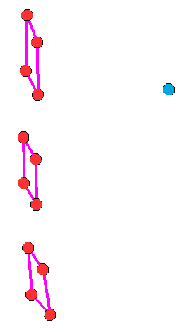
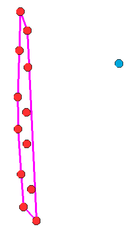
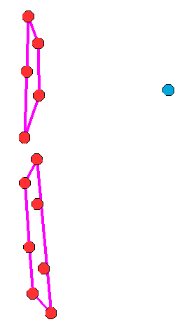

WsfClusterManager¶
- WsfClusterManager inherits Object
WsfClusterManager provides access to various clustering algorithms. It accepts arrays of objects as input and forms clusters (other arrays) that best fit the groupings of the objects provided. WsfClusterManager can be configured to cluster the objects according to a K-Means or a Hierarchical Tree clustering method. WsfClusterManager creates and returns arrays of clusters (arrays of arrays). When determining the best fit, WsfClusterManager can use 2D position, 3D position, or a custom user score as a similarity measurement between objects. WsfClusterManager can cluster the following object types: WsfTrack, WsfLocalTrack, WsfPlatform, WsfGeoPoint, & WsfAssetPerception. It accepts arrays of said objects and it also accepts these types: WsfTrackList, WsfLocalTrackList, & WsfPlatformList.
Configuration Methods¶
Configuration methods provide a way to create and/or modify the settings of the WsfClusterManager. These settings determine how the manager will cluster. In many cases, the choices here will be ineffectual because the groupings of the objects are obvious and any algorithm choice or similarity measure will produce the same results. Only in special cases will there be noticeable differences. If no distance limit or number of clusters are specified, the cluster manager will make a guess for you on the best number of clusters of generate. Example: if clustering 10 objects, then 3 clusters will be generated, and if clustering 21 objects, then 5 clusters will be generated, etc. Please set the distance limit for best usage.
- WsfClusterManager Create()¶
Returns an instance of a WsfClusterManager. See “Construction” example above.
- void SetClusterMethod(string methodName)¶
Allows the user to tell the cluster manager which clustering algorithm to use. Options:
“H_TREE_MAX”, a complete linkage agglomerative method. Provides tight groupings with diameter no larger than the limit.
“H_TREE_MIN”, a single linkage agglomerative method. Can provide longer strings of objects linked together.
“H_TREE_AVG”, a dynamic linkage agglomerative method, average between min and max, but takes longer.
“K_MEANS”, not dynamic, but best suited for when you know how many clusters you want. Use: SetClusterCount(int).
Default: “H_TREE_MAX”.
Example Clustering: H_TREE_MAX, H_TREE_MIN, and K_MEANS (with K = 2):
  
- void SetDistanceFunction(string measure)¶
Allows the user to tell the cluster manager what measure to use while computing similarity between tracks. Options:
“POSITION_ONLY”, uses 3D position.
“2D_POSITION_ONLY”, only uses 2D position, no altitude.
Default: “POSITION_ONLY”.
- void SetScriptDistanceFunction(string functionName)¶
Allows the user to specify a script method to be used in scoring the similarity (or distance) of potential cluster members. The argument types of the function need to match the type of objects you will be clustering. Users can override the script function as often as they like. Warning - only used for cluster methods “H_TREE_MAX” and “H_TREE_MIN”.
Example:
script double MyTrackFunction(WsfTrack t1, WsfTrack t2) return t1.GroundRangeTo(t2); end_script script double MyPlatformFunction(WsfPlatform p1, WsfPlatform p2) return p1.SlantRangeTo(p2); end_script on_update WsfClusterManager cm = WsfClusterManager.Create(); cm.SetScriptDistanceFunction("MyTrackFunction"); Array<Array<WsfLocalTrack>> trackClusters = cm.GetClusters(PLATFORM.MasterTrackList()); //now use a custom function to cluster a different object type cm.SetScriptDistanceFunction("MyPlatformFunction"); Array<Array<WsfPlatform>> platformClusters = cm.GetClusters(PLATFORM.Subordinates()); end_on_update
- void SetDistanceLimit(double newLimit)¶
Default: not used. Reasonable starting value: 46300 (meters == 25 nm). Informs the cluster manager how close a potential member has to be to a cluster in order to be considered part of that cluster. How this value is actually used depends on the clustering method. For example: if “H_TREE_MIN” is chosen as your clustering method, then a potential member can be considered part of a cluster if it’s within the distance limit to any of the current members. “H_TREE_MAX” requires members to be within the limit to all other members.
- void SetNumClustersToCreate(int count)¶
Allows the user to tell the cluster manager how many clusters to form. Warning: only use this function if you want a specific number of clusters because this might not allow the manager to best fit the data.
Cluster Methods¶
A cluster can be thought of as an array of objects. When you get clusters from the manager, it will provide you an array of clusters (an array of arrays). The cluster manager does not record or maintain any clusters inside of itself; the manager calculates them when you call one of these methods and it gives them back to you immediately. The cluster manager generates clusters based on how it has been configured.
- Array<Array<WsfTrack>> GetClusters(WsfTrackList objects)¶
- Array<Array<WsfLocalTrack>> GetClusters(WsfLocalTrackList objects)¶
- Array<Array<WsfPlatform>> GetClusters(WsfPlatformList objects)¶
- Array<Array<WsfTrack>> GetClusters(Array<WsfTrack> objects)¶
- Array<Array<WsfLocalTrack>> GetClusters(Array<WsfLocalTrack> objects)¶
- Array<Array<WsfPlatform>> GetClusters(Array<WsfPlatform> objects)¶
- Array<Array<WsfGeoPoint>> GetClusters(Array<WsfGeoPoint> objects)¶
- Array<Array<WsfAssetPerception>> GetClusters(Array<WsfAssetPerception> objects)¶
Performs a clustering algorithm on the objects and returns an array of clusters. A cluster is an array of objects.
Utility Methods¶
These methods provide addition data about your clusters.
- int UniqueId(Array<WsfTrack> cluster)¶
- int UniqueId(Array<WsfLocalTrack> cluster)¶
- int UniqueId(Array<WsfPlatform> cluster)¶
- int UniqueId(Array<WsfGeoPoint> cluster)¶
- int UniqueId(Array<WsfAssetPerception> cluster)¶
Returns a unique ID for the cluster based on the cluster members. If another cluster happens to have the same exact members (no more, no less) then it will have the same ID.
- Array<WsfTrack> ConvexHull(Array<WsfTrack> cluster)¶
- Array<WsfLocalTrack> ConvexHull(Array<WsfLocalTrack> cluster)¶
- Array<WsfPlatform> ConvexHull(Array<WsfPlatform> cluster)¶
- Array<WsfGeoPoint> ConvexHull(Array<WsfGeoPoint> cluster)¶
- Array<WsfAssetPerception> ConvexHull(Array<WsfAssetPerception> cluster)¶
Returns the convex hull bounding shape that encapsulates the members of the cluster. The hull is comprised of cluster member objects that form the shape.
- WsfGeoPoint MeanLocation(Array<WsfTrack> cluster)¶
- WsfGeoPoint MeanLocation(Array<WsfLocalTrack> cluster)¶
- WsfGeoPoint MeanLocation(Array<WsfPlatform> cluster)¶
- WsfGeoPoint MeanLocation(Array<WsfGeoPoint> cluster)¶
- WsfGeoPoint MeanLocation(Array<WsfAssetPerception> cluster)¶
Returns the average position of the members in the cluster. Similar to center of gravity of the cluster (assuming all members have the same “mass”).
- WsfTrack NearestMember(Array<WsfTrack> cluster, WsfGeoPoint refPt)¶
- WsfLocalTrack NearestMember(Array<WsfLocalTrack> cluster, WsfGeoPoint refPt)¶
- WsfPlatform NearestMember(Array<WsfPlatform> cluster, WsfGeoPoint refPt)¶
- WsfGeoPoint NearestMember(Array<WsfGeoPoint> cluster, WsfGeoPoint refPt)¶
- WsfAssetPerception NearestMember(Array<WsfAssetPerception> cluster, WsfGeoPoint refPt)¶
Returns the nearest cluster member object to the given reference point.
- Array<Object> NearestEdgePoint(Array<WsfTrack> cluster, WsfGeoPoint refPt)¶
- Array<Object> NearestEdgePoint(Array<WsfLocalTrack> cluster, WsfGeoPoint refPt)¶
- Array<Object> NearestEdgePoint(Array<WsfPlatform> cluster, WsfGeoPoint refPt)¶
- Array<Object> NearestEdgePoint(Array<WsfGeoPoint> cluster, WsfGeoPoint refPt)¶
- Array<Object> NearestEdgePoint(Array<WsfAssetPerception> cluster, WsfGeoPoint refPt)¶
Returns the nearest cluster edge point of the cluster to the given reference point; it also returns the two indices of cluster members that share the edge of the nearest point. If the nearest edge point is on a corner (on a member), then the indices will be the same. Example:
//Array<WsfTrack> cluster; //filled with tracks somehow Array<Object> vals = manager.NearestEdgePoint(cluster, PLATFORM.Location()); int index1 = (int) vals[0]; int index2 = (int) vals[1]; WsfGeoPoint point = (WsfGeoPoint)vals[2]; WsfTrack member1 = cluster[index1]; WsfTrack member2 = cluster[index2];
Image key: three clusters rendered (type: hull) with draw() using a purple color. The yellow point is the reference point. The green line is drawn to the nearest edge point. The blue lines are drawn to the members that share the edge point (given by the two indices returned).
- void Draw(Array<WsfTrack> cluster, double duration, Vec3 color, string type)¶
- void Draw(Array<WsfLocalTrack> cluster, double duration, Vec3 color, string type)¶
- void Draw(Array<WsfPlatform> cluster, double duration, Vec3 color, string type)¶
- void Draw(Array<WsfGeoPoint> cluster, double duration, Vec3 color, string type)¶
- void Draw(Array<WsfAssetPerception> cluster, double duration, Vec3 color, string type)¶
Draws the given ‘cluster’ for ‘duration’ with the ‘color’. Type can be “hull” or “star”. Default: “hull”.
- Array<Object> CrossLength(Array<WsfTrack> cluster, WsfGeoPoint refPt)¶
- Array<Object> CrossLength(Array<WsfLocalTrack> cluster, WsfGeoPoint refPt)¶
- Array<Object> CrossLength(Array<WsfPlatform> cluster, WsfGeoPoint refPt)¶
- Array<Object> CrossLength(Array<WsfGeoPoint> cluster, WsfGeoPoint refPt)¶
- Array<Object> CrossLength(Array<WsfAssetPerception> cluster, WsfGeoPoint refPt)¶
Returns the length of the cross beam of the cluster relative to the reference point; it also returns the two end points of the cross beam. Example:
Array<Object> vals = manager.CrossLength(cluster, PLATFORM.Location()); double length = (double) vals[0]; WsfGeoPoint left = (WsfGeoPoint)vals[1]; WsfGeoPoint right = (WsfGeoPoint)vals[2];
Image key: three clusters rendered (type: hull) with draw() using a purple color. The yellow point is the reference point. The gray lines are to the mean locations of the clusters. The black line is the cross beam line (relative to the yellow point) which is drawn between the two points returned.
Example¶
end_time 5 min
dis_interface
record replay.rep
end_dis_interface
platform tracker WSF_PLATFORM
add mover WSF_AIR_MOVER
end_mover
route position 0.0n 0.1w altitude 10 km heading 90 deg speed 400 kts end_route
add sensor geom-1 WSF_GEOMETRIC_SENSOR
frame_time 1 s
maximum_range 20 km
azimuth_error_sigma 10 deg
elevation_error_sigma 10 deg
range_error_sigma 1000 m
reports_location
reports_velocity
processor track_processor
on
end_sensor
add processor track_processor WSF_TRACK_PROCESSOR end_processor
script_variables
WsfClusterManager manager = WsfClusterManager.Create();
end_script_variables
execute at_time .1 s absolute
manager.SetClusterMethod("H_TREE_MAX");
manager.SetDistanceFunction("POSITION_VELOCITY");
manager.SetDistanceLimit(9260); # 5nm
end_execute
execute at_interval_of 5.0 s
WsfLocalTrackList tracks = PLATFORM.MasterTrackList();
Array<Array<WsfLocalTrack>> trackClusters = manager.GetClusters(tracks);
foreach(Array<WsfLocalTrack> cluster in trackClusters)
{
manager.Draw(cluster, 5, Vec3.Construct(1,0,1), "hull"); #draw purple colored cluster hull for 5 seconds
int id = manager.UniqueId(cluster);
foreach(WsfLocalTrack member in cluster)
{
writeln("cluster ", id," member: ", member.TargetName());
}
Array<WsfLocalTrack> hull = manager.ConvexHull(cluster);
WsfGeoPoint mean = manager.MeanLocation(cluster);
WsfTrack member = manager.NearestMember(cluster, PLATFORM.Location());
Array<Object> vals = manager.NearestEdgePoint(cluster, PLATFORM.Location());
Array<Object> vals = manager.CrossLength(cluster, PLATFORM.Location());
}
end_execute
end_platform
//put at least 2 targets out there, to make it interesting (why cluster just one?).
platform target WSF_PLATFORM
add mover WSF_AIR_MOVER end_mover
route position 0.0n 0.0e altitude 10 km heading 90 deg speed 400 kts end_route
end_platform
platform target_2 WSF_PLATFORM
add mover WSF_AIR_MOVER end_mover
route position 0.0n 0.05w altitude 10 km heading 90 deg speed 400 kts end_route
end_platform